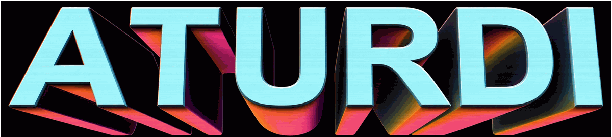
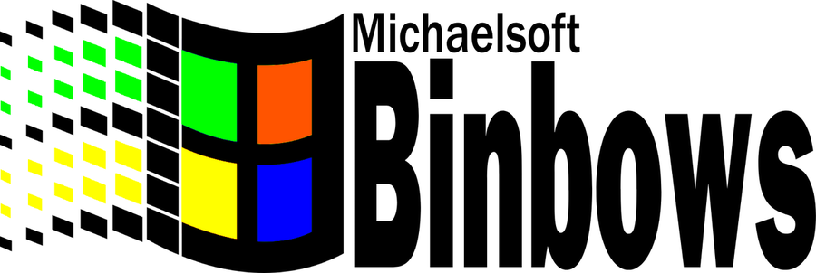

ATURDI n'est affilié à Nintendo, Sony, Sega, Microsoft ni à aucune autre compagnie de jeux vidéo, d'aucune façon, ni de près ni de loin, pas du tout. Nous ne croyons pas non plus au concept d'avocat. Toute ressemblance entre nos produits et des consoles existantes est une coïncidence que nos avocats assument pleinement.
Qui est ATURDI
ATURDI EST UNE MARQUE QUI N'A PLUS BESOIN D'ÊTRE PRÉSENTÉE, CAR TOUT LE MONDE LA CONNAÎT. MAIS AU CAS OÙ, EN VOICI UNE BRÈVE PRÉSENTATION. DEPUIS 1984, NOUS N'OFFRONS RIEN D'AUTRE QUE LE PLUS HAUT NIVEAU DE QUALITÉ AUX JOUEURS DU MONDE ENTIER. APRÈS LE SUCCÈS INCOMMENSURABLE DE NOTRE PREMIÈRE CONSOLE ENTIÈREMENT ORIGINALE, LA FAMICLONE (QUI S'EST VENDUE À PLUS DE 5 000 EXEMPLAIRES ET EST PRÉSENTE DANS PLUS DE 7 FOYERS AMÉRICAINS), NOUS N'AVONS CESSÉ DE LANCER DES JEUX CLASSIQUES LES UNS APRÈS LES AUTRES ET DES CONSOLES LES UNES APRÈS LES AUTRES. NOTRE USINE DE SHENZHEN TOURNE SANS INTERRUPTION DEPUIS 1991, SAUF LES JOURS OÙ ELLE EST SAISIE. INUTILE DE PRÉCISER QUE, MALGRÉ TOUTES LES ÉPREUVES ET LES TRIBULATIONS CAUSÉES PAR LES LETTRES DE CESSATION ET D'ABSTENTION ET LES NOMBREUX PROCÈS POUR PLAGIAT, NOUS NE SOMMES PAS UNE ENTREPRISE QUI A BESOIN D'AIDE. NOUS FAISONS LES CHOSES NOUS-MÊMES.
La mise en situation
Bon. On a peut-être un petit peu besoin d'aide.
Cette année, nous avons lancé la console la plus ambitieuse de notre histoire : 7 000 000 DE JEUX EN 1. Une prouesse technique. Une boîte magnifique. Un autocollant holographique.
Trois semaines plus tard, notre rival de toujours, Michaelsoft Binbows, a répliqué avec sa propre console : 7 millions ET UN.
Nous nous battons depuis 1991 pour le titre de meilleure compagnie de contrefaçon au monde. Nous n'allons pas perdre ce titre à cause d'un seul jeu.
Il y a toutefois un petit problème. Nous n'avons pas sept millions de jeux. Nous en avons environ quarante, renommés cent soixante-quinze mille fois. Il nous faut de vrais jeux, et vite.

NE CLIQUEZ PASOui, ils ont acheté de l'espace publicitaire sur notre propre site. Nos avocats étudient la question. Les mêmes avocats que plus haut.
Votre mandat
Codez un jeu. N'importe lequel. Il ira directement dans la prochaine console ATURDI, entre le jeu no 4 182 906 et le même jeu renommé.
- N'importe quel genre, moteur, langage ou plateforme : jeu de navigateur, mini-jeu, jeu de console, jeu textuel, peu importe.
- Ça peut aussi être relié aux jeux sans être un jeu : un éditeur de niveaux, un tableau des scores, un bot qui joue à votre place, un outil pour les joueurs, un émulateur d'une console que vous venez d'inventer.
- Nous sommes désespérés. Tant que ça roule devant le jury, ça nous intéresse.
Ce que nous jugerons
- Que ça roule en démonstration réelle, sans planter.
- Que ce soit jouable, ou au moins compréhensible, en trois minutes.
- Que quelqu'un, quelque part, ait du plaisir. Idéalement le jury.